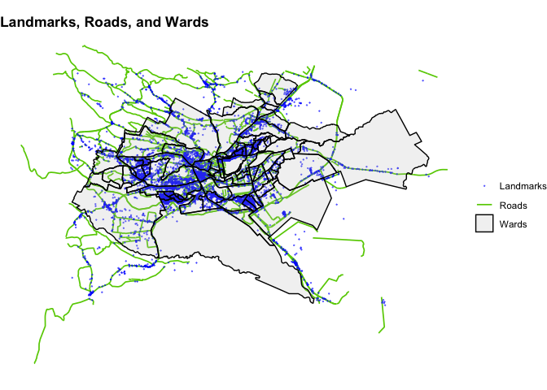
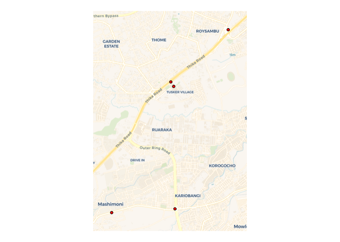

Overview
Text often contains references to the locations of events where we want to extract the location of the event. For example, consider this example tweet that reports a road traffic crash in Nairobi, Kenya, where we are interested in determining the location of the crash:
crash occurred near garden city on thika road on your way towards roysambu.
The tweet contains three location references: (1) garden city, (2) Thika road and (3) roysambu, where ‘garden city’ is the name of multiple locations. Here, we are interested in extracting the location of the garden city location on Thika road that represents the crash site.
The Unique Location Extractor (ULEx) geoparses text to extract the unique location of events. The algorithm first determines which location references refer to the event of interest and which location references should be ignored. The algorithm them determines the location of the event by checking text against dictionaries of landmarks, roads, and areas (such as neighborhoods). Moreover, the algorithm accounts for differences in spelling between how a user writes a location and how the location is captured in a dictionary of locations; users may use short, informal names while a location dictionary may contain formal names. For example, a user may write “crash near mathare center”, while a landmark dictionary contains “mathare social justice centre”.
This package was originally developed to extract locations of road traffic crashes from reports of crashes via Twitter, specifically in the context of Nairobi, Kenya using the Twitter feed @Ma3Route. For more information, see our article here:
Installation
The package can be installed via CRAN.
install.packages("ulex")You can install the development version of ulex from GitHub with:
# install.packages("devtools")
devtools::install_github("dime-worldbank/ulex")Functions
The package contains two functions:
augment_gazetteer: The backbone of locating events is looking up location references in a gazetteer, or geographic dictionary. The
augment_gazetteerfacilitates cleaning a gazetteer that may have been constructed from sources such as OpenStreetMaps, Geonames or Google Maps. For more information on the function, see here.locate_event: Takes text as input and returns the location of the relevant event. Key inputs include the text to geoparse, a gazetteer of landmarks, spatial files of roads and areas (e.g., neighborhoods) and a list of event words. For more information on the function, see here.
Quick Start
Create location datasets
Dataset of Wards
We create a dataset of Wards in Nairobi from GADM.
ken_sf <- gadm(country = "KEN", level = 3, path = tempdir()) %>% st_as_sf()
nbo_sf <- ken_sf %>%
filter(NAME_1 %in% "Nairobi") %>%
rename(name = NAME_3) %>%
dplyr::select(name)
head(nbo_sf)
#> Simple feature collection with 6 features and 1 field
#> Geometry type: POLYGON
#> Dimension: XY
#> Bounding box: xmin: 36.67803 ymin: -1.302667 xmax: 36.81967 ymax: -1.256238
#> Geodetic CRS: WGS 84
#> name geometry
#> 1 Gatina POLYGON ((36.7601 -1.268443...
#> 2 Kileleshwa POLYGON ((36.81139 -1.27213...
#> 3 Kilimani POLYGON ((36.75393 -1.28606...
#> 4 Kabiro POLYGON ((36.7373 -1.275437...
#> 5 Kawangware POLYGON ((36.74915 -1.27165...
#> 6 Mutu-Ini POLYGON ((36.67803 -1.29837...Dataset of roads
We create a dataset of roads from OpenStreetMaps.
roads_sf <- opq(st_bbox(nbo_sf), timeout = 999) %>%
add_osm_feature(key = "highway", value = c("motorway",
"trunk",
"primary",
"secondary",
"tertiary",
"unclassified")) %>%
osmdata_sf()
roads_sf <- roads_sf$osm_lines
roads_sf <- roads_sf %>%
filter(!is.na(name)) %>%
dplyr::select(name) %>%
mutate(name = name %>% tolower())
head(roads_sf)
#> Simple feature collection with 6 features and 1 field
#> Geometry type: LINESTRING
#> Dimension: XY
#> Bounding box: xmin: 36.80283 ymin: -1.348233 xmax: 36.91442 ymax: -1.286476
#> Geodetic CRS: WGS 84
#> name geometry
#> 4685092 airport south road LINESTRING (36.91442 -1.344...
#> 4716860 state house avenue LINESTRING (36.80434 -1.286...
#> 4716861 processional way LINESTRING (36.81367 -1.287...
#> 4716862 kenyatta avenue LINESTRING (36.81026 -1.289...
#> 4716887 kenyatta avenue LINESTRING (36.81188 -1.289...
#> 4723375 city mortuary round about LINESTRING (36.80306 -1.298...Dataset of landmarks (landmark gazetteer)
We create a gazetteer of landmarks from OpenStreetMaps. From OpenStreetMaps, we use all amenities and bus stops.
# Amenities --------------------------------------------------------------------
amenities_sf <- opq(st_bbox(nbo_sf), timeout = 999) %>%
add_osm_feature(key = "amenity") %>%
osmdata_sf()
amenities_pnt_sf <- amenities_sf$osm_points
amenities_ply_sf <- amenities_sf$osm_polygons %>%
st_centroid()
amenities_sf <- bind_rows(amenities_pnt_sf,
amenities_ply_sf) %>%
dplyr::mutate(type = amenity)
# Bus Stops --------------------------------------------------------------------
busstops_sf <- opq(st_bbox(nbo_sf), timeout = 999) %>%
add_osm_feature(key = "highway",
value = "bus_stop") %>%
osmdata_sf()
busstops_sf <- busstops_sf$osm_points
busstops_sf <- busstops_sf %>%
mutate(type = "bus_stop")
# Append -----------------------------------------------------------------------
landmarks_sf <- bind_rows(amenities_sf,
busstops_sf) %>%
filter(!is.na(name)) %>%
dplyr::select(name, type) %>%
mutate(name = name %>% tolower())
head(landmarks_sf)
#> Simple feature collection with 6 features and 2 fields
#> Geometry type: POINT
#> Dimension: XY
#> Bounding box: xmin: 36.70606 ymin: -1.325597 xmax: 36.80624 ymax: -1.292358
#> Geodetic CRS: WGS 84
#> name type
#> 30031187 regina caeli karen catholic church place_of_worship
#> 30088423 china plate restaurant
#> 30088443 rubis fuel
#> 30088444 shell kabuagi fuel
#> 30088453 karen police station police
#> 30092033 total fuel
#> geometry
#> 30031187 POINT (36.7107 -1.325597)
#> 30088423 POINT (36.80624 -1.292358)
#> 30088443 POINT (36.71747 -1.317521)
#> 30088444 POINT (36.71842 -1.316594)
#> 30088453 POINT (36.70606 -1.321773)
#> 30092033 POINT (36.78867 -1.299975)Map landmark, road, and area dictionaries
The below map shows the locations in the landmark, roads, and area dictionaries.
ggplot() +
geom_sf(data = roads_sf,
aes(color = "Roads"),
linewidth = 0.6) +
geom_sf(data = landmarks_sf,
aes(color = "Landmarks"),
size = 0.1,
alpha = 0.5) +
geom_sf(data = nbo_sf,
fill = "gray",
aes(color = "Wards"),
linewidth = 0.5,
alpha = 0.2) +
labs(color = NULL,
title = "Landmarks, Roads, and Wards") +
scale_color_manual(values = c("blue", "chartreuse3", "black")) +
theme_void() +
theme(plot.title = element_text(face = "bold"))
Augment Gazetteer
Here, we augment the landmark gazetteer—which increases the number of entries from about 11,000 to 50,000.
landmarks_aug_sf <- augment_gazetteer(landmarks_sf)
print(nrow(landmarks_sf))
#> [1] 11164
print(nrow(landmarks_aug_sf))
#> [1] 50022
head(landmarks_aug_sf)
#> Simple feature collection with 6 features and 3 fields
#> Geometry type: POINT
#> Dimension: XY
#> Bounding box: xmin: 36.70606 ymin: -1.325597 xmax: 36.80624 ymax: -1.292358
#> Geodetic CRS: WGS 84
#> name type
#> 30031187 regina caeli karen catholic church place_of_worship
#> 30088423 china plate restaurant
#> 30088443 rubis fuel
#> 30088444 shell kabuagi fuel
#> 30088453 karen police station police
#> 30092079 nairobi international trade fair exhibition_centre
#> name_original geometry
#> 30031187 regina caeli karen catholic church POINT (36.7107 -1.325597)
#> 30088423 china plate POINT (36.80624 -1.292358)
#> 30088443 rubis POINT (36.71747 -1.317521)
#> 30088444 shell kabuagi POINT (36.71842 -1.316594)
#> 30088453 karen police station POINT (36.70606 -1.321773)
#> 30092079 nairobi international trade fair POINT (36.76114 -1.307832)Locate Events
We geolocate the location of crashes contained in five texts.
texts <- c("crash at garden city",
"crash occurred near garden city on thika road towards roysambu",
"crash at intersection of juja road and outer ring rd",
"crash occured near roysambu on thika rd",
"crash near mathare centre along juja road")
crashes_sf <- locate_event(text = texts,
landmark_gazetteer = landmarks_aug_sf,
areas = nbo_sf,
roads = roads_sf,
event_words = c("accident", "crash", "collision",
"wreck", "overturn"))
ext <- crashes_sf %>%
st_buffer(dist = 500) %>%
st_bbox()
ggplot() +
geom_sf() +
basemap_gglayer(ext) +
geom_sf(data = crashes_sf %>%
st_transform(3857),
pch = 21,
color = "black",
fill = "red") +
scale_fill_identity() +
theme_void()
#> Loading basemap 'voyager' from map service 'carto'...
#> Using geom_raster() with maxpixels = 272936.
The output of locate_event() has the following variables:
- text: Original text to geocode.
-
matched_words_correct_spelling: Names of locations used to geocode the event, as names appear in landmark, roads, and area datasets
-
matched_words_text_spelling: Names of locations used to geocode event, as names appear in text.
-
dist_closest_event_word: Distance of landmark to event word (ie, number of words between event word and location word).
-
type: Type of location (e.g., landmark, intersection).
-
how_determined_location: Information on how location was determined.
-
dist_mentioned_road_m: Distance (meters) of event location to mentioned road.
-
lon_all: All landmark locations found in text (longitude).
-
lat_all: All landmark locations found in text (latitude).
-
landmarks_all_text_spelling: Names of all landmarks found, as names appear in text.
-
landmarks_all_correct_spelling: Names of all landmarks found, as names appear in landmark gazetteer.
-
landmarks_all_location: Names of landmarks and locations (name,latitude,longitude).
-
roads_all_text_spelling: Names of roads in text, as names appear in text.
-
roads_all_correct_spelling: Name of roads in text, as names appear in road dataset.
-
intersection_all_text_spelling: Name of intersection (e.g., pairs of roads that make intersection), as names appear in text.
- intersection_all_correct_spelling: Name of intersection (e.g., pairs of roads that make intersection), as names appear road dataset.
-
intersection_all_location: Name and locations of intersections (name,latitude,longitude).
- geometry: Geometry of event location.
head(crashes_sf)
#> Simple feature collection with 5 features and 17 fields
#> Geometry type: POINT
#> Dimension: XY
#> Bounding box: xmin: 36.86339 ymin: -1.263214 xmax: 36.89176 ymax: -1.218554
#> Geodetic CRS: WGS 84
#> text
#> 1 crash at garden city
#> 2 crash occurred near garden city on thika road towards roysambu
#> 3 crash at intersection of juja road and outer ring rd
#> 4 crash occured near roysambu on thika rd
#> 5 crash near mathare centre along juja road
#> matched_words_correct_spelling matched_words_text_spelling
#> 1 garden city garden city
#> 2 garden city garden city
#> 3 juja road,outer ring rd juja road,outer ring rd
#> 4 roysambu roysambu
#> 5 mathare centre mathare centre
#> dist_closest_event_word type
#> 1 2 landmark
#> 2 3 landmark
#> 3 <NA> intersection
#> 4 3 landmark
#> 5 2 landmark
#> how_determined_location
#> 1 crashword_tier_crashword_prepos_tier_1preposition_landmark
#> 2 crashword_tier_crashword_other_prepos_tier_2preposition_landmark;restrict_landmarks_close_to_road;snapped_to_road
#> 3 intersection_word
#> 4 crashword_tier_crashword_other_prepos_tier_2preposition_landmark
#> 5 crashword_tier_crashword_prepos_tier_2preposition_landmark;restrict_landmarks_close_to_road;snapped_to_road
#> dist_mentioned_road_m
#> 1 NA
#> 2 0.1138995
#> 3 9.3633326
#> 4 NA
#> 5 5.1565383
#> lon_all
#> 1 36.8783717;36.8780867;36.8787449;36.8783882;36.877926;36.8779701;36.8790582;36.8788693;36.8784728;36.878982133789
#> 2 36.8776376;36.8780562;36.8773468;36.8774006;36.8784865
#> 3 36.8787944172118
#> 4 36.8914926;36.8910567;36.8909309;36.8925596;36.892742
#> 5 36.8657684;36.8643478;36.8637369;36.8599741;36.8631133
#> lat_all
#> 1 -1.2325403;-1.2320662;-1.232074;-1.2330105;-1.2323486;-1.2322988;-1.2329316;-1.2332295;-1.23139664524347
#> 2 -1.2314164;-1.231087;-1.23165;-1.231608;-1.2307509
#> 3 -1.26230037028693
#> 4 -1.2175606;-1.2204266;-1.2179853;-1.2182267;-1.2185699
#> 5 -1.2625076;-1.262893;-1.2630666;-1.2643594;-1.2632442
#> landmarks_all_text_spelling landmarks_all_correct_spelling
#> 1 garden city garden city
#> 2 garden city;roysambu garden city;roysambu
#> 3 <NA> <NA>
#> 4 roysambu roysambu
#> 5 mathare centre mathare centre
#> landmarks_all_location
#> 1 garden city,-1.2330105,36.8783882;garden city,-1.2323486,36.8779701;garden city,-1.232074,36.877926;garden city,-1.2322988,36.8790582;garden city,-1.2320662,36.8780867;garden city,-1.232074,36.8787449;garden city,-1.2329316,36.8788693;garden city,-1.2332295,36.8784728;garden city,-1.23139664524347,36.878982133789;garden city,-1.2325403,36.8783717
#> 2 roysambu,-1.2182267,36.8925596;roysambu,-1.2185699,36.892742;roysambu,-1.2179853,36.8909309;roysambu,-1.2204266,36.8910567;garden city,-1.2330105,36.8783882;roysambu,-1.2175606,36.8914926;garden city,-1.2323486,36.8779701;garden city,-1.232074,36.877926;garden city,-1.2322988,36.8790582;garden city,-1.2320662,36.8780867;garden city,-1.232074,36.8787449;garden city,-1.2329316,36.8788693;garden city,-1.2332295,36.8784728;garden city,-1.23139664524347,36.878982133789;garden city,-1.2325403,36.8783717
#> 3 <NA>
#> 4 roysambu,-1.2182267,36.8925596;roysambu,-1.2185699,36.892742;roysambu,-1.2179853,36.8909309;roysambu,-1.2204266,36.8910567;roysambu,-1.2175606,36.8914926
#> 5 mathare centre,-1.2611937,36.8653216;mathare centre,-1.2617117,36.8577317;mathare centre,-1.2638293,36.845051;mathare centre,-1.2611119,36.8638678;mathare centre,-1.2618483,36.8656506;mathare centre,-1.26414643275423,36.8546990206489;mathare centre,-1.2614051,36.862644;mathare centre,-1.262266,36.8501481;mathare centre,-1.2624083,36.8501916;mathare centre,-1.249874,36.876873;mathare centre,-1.2617267,36.86359;mathare centre,-1.2615767,36.8638023;mathare centre,-1.2639967,36.8450983;mathare centre,-1.2617323,36.8634252
#> roads_all_text_spelling roads_all_correct_spelling
#> 1 <NA> <NA>
#> 2 thika road thika road
#> 3 juja road;outer ring rd juja road;outer ring rd
#> 4 <NA> <NA>
#> 5 juja road juja road
#> intersection_all_text_spelling intersection_all_correct_spelling
#> 1 <NA> <NA>
#> 2 <NA> <NA>
#> 3 juja road,outer ring rd juja road,outer ring rd
#> 4 <NA> <NA>
#> 5 <NA> <NA>
#> intersection_all_location
#> 1 <NA>
#> 2 <NA>
#> 3 juja road,outer ring rd,-1.26230037028693,36.8787944172118
#> 4 <NA>
#> 5 <NA>
#> geometry
#> 1 POINT (36.87849 -1.232397)
#> 2 POINT (36.87779 -1.231302)
#> 3 POINT (36.87879 -1.2623)
#> 4 POINT (36.89176 -1.218554)
#> 5 POINT (36.86339 -1.263214)Additional information on functions
augment_gazetteer()
The augment_gazetteer function adds additional landmarks to account for different ways of saying the same landmark name. For example, raw gazetteers may contain long, formal names, where shorter versions of the name are more often used. In addition, the function facilitates removing landmarks names that are spurious or may confuse the algorithm; these include landmark names that are common words that may be used in different contexts, or frequent and generic landmarks such as hotel. Key components of the function include:
- Adding additional landmarks based off of n-grams and skip-grams of landmark names. For example, from the original landmark
garden city mall, the following landmarks will be added:garden city,city mall, andgarden mall. - Adding landmarks according to a set of rules: for example, if a landmark starts or ends with a certain word, an alternative version of the landmark is added that removes that word. Here, words along categories of landmarks are removed, where a user may not reference the category; for example, a user will more likely say
McDonaldsthanMcDonalds restaurant. - Removes landmarks that refer to large geographic areas (e.g., roads). Roads and areas are dealt with separately; this function focuses on cleaning a gazetteer of specific points/landmarks.
Pages S4 to S6 in the supplementary information file here provides further details on the augment gazetteer algorithm
locate_event()
The locate_event function extracts landmarks from text and determines the unique location of events from the text. The algorithm works in two steps: (1) finding locations in text and (2) determining a unique location.
Finding location references in text
To extract location references from text, the function implements the following steps to extract location references from text.
- Determines whether any text matches names in the gazetteer. Both exact and ‘fuzzy’ matches (allowing a certain Levenstein distance) are used.
- Rely on words after prepositions to find locations. The algorithm starts with a word after a preposition and extracts all landmarks that contain that word. Then, the algorithm takes the next word in the text and further subsets the landmarks. This process is repeated until adding a word removes all landmarks. If a road or area (eg, neighborhood) is found in the previous step, only landmarks near that road or neighborhood are considered. Landmarks with the shortest number of words are kept (i.e., if this process finds 5 landmarks with 2 words and 7 landmarks with 3 words, only the 5 landmarks with 2 words are kept).
- If a road or area is mentioned and a landmark is not near that road or landmark, longer versions of the landmark that are near the road or area are searched for. For example, if a user says
crash near garden on thika road, the algorithm may extract multiple landmarks with the namegarden, none of which are near Thika road. It will then search for all landmarks that containgardenin them (e.g.,garden city mall) that are near Thika road. - If two roads are mentioned, the algorithm extracts the intersection of the roads.
Determine unique location
After extracting landmarks, the algorithm seeks to identify a single location using a series of steps. These steps consider a defined list of event words (eg, for road traffic crashes, these could include ‘crash’, ‘accident’, ‘overturn’, etc), whether the user mentions a junction word (e.g., ‘junction’ or ‘intersection’) and a list of prepositions. Certain prepositions are given precedent over others to distinguish between locations indicating the location of an event versus locations further away that provide additional context; for example, at takes higher precedence that towards. The following main series of steps are used in the following order:
- Locations that follow the pattern [event word] [preposition] [location] are extracted.
- Locations that follow the pattern [preposition] [location] are extracted. If multiple occurrences, the location near the higher order preposition is used. If a tie, the location closest to the event word is used.
- If a junction word is used, two roads are mentioned, and the two roads intersect once, the intersection point is used.
- The location closest to the event word within the text is used.
- If the location name has multiple locations, we (1) restrict to locations near any mentioned road or area, (2) check for a dominant cluster of locations and (3) prioritize certain landmark types over others (e.g., a user is more likely to reference a large, well known location type like a stadium).
- If a landmark is not found, but a road or area are found, the road or area are returned. If a road and area are mentioned, the intersection of the road and area is returned.
Pages S15 to S19 in the supplementary information file here provides further details on the locate event algorithm